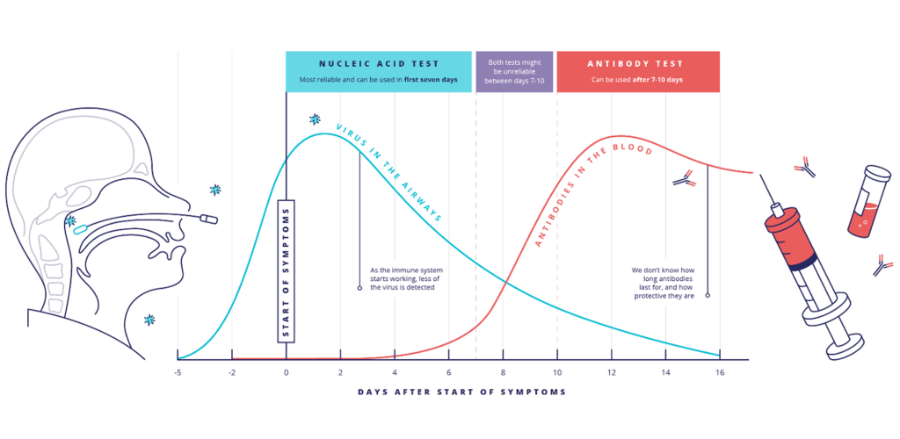
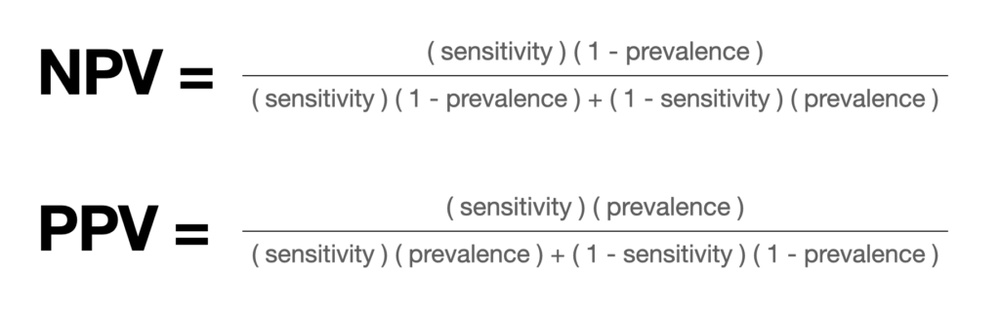
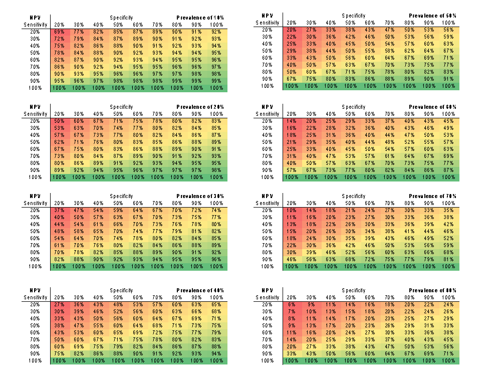

Diagnosis of COVID-19 relies on detection of virus, in the form of nucleic acid or antigen, and/or detection of antibodies to the virus. These are detected temporally after infection and development of symptoms (Figure).

Chart: The rise and fall of the virus in the airways and antibodies in the blood for 21 days after exposure to infection (Interpreting Covid-19 Test Results: A Bayesian Approach)
Detection of virus with nucleic acid amplification testing (NAAT) or antigen is optimal early in the course of disease. Testing too late decreases sensitivity. However, antibodies appear later.
While tests are reported as ‘positive’ and ‘negative,’ results need to be interpreted in context to determine the probability that a diagnostic test result is a correct indicator of COVID-19. This is a function of two things:
- How good is the test? This depends on analytic sensitivity and specificity, and timing relative to symptoms; and
- How likely is it that someone has the disease? This is ‘pre-test probability,’ which is dependent on exposure (prevalence) and signs and symptoms of disease.
According to Bayes Theorem, output is thus reported as negative predictive value (NPV) – how likely a negative test is to tell you that the patient really does not have COVID-19, and positive predictive value (PPV) – how likely a positive test tells you that the patient does have COVID-19.
The tool does the math to generate post-test probabilities and offers diagnostic suggestions.
Diagnostic tests tell us how likely one is to have a disease. Most tests are ‘imperfect’ in not having 100% sensitivity and specificity and need to be interpreted based on probability that the test is correct. Clinicians frequently do this by ‘intuition’ based on risks, and clinical presentation. If a person really appears to have the infection, the test may be more likely to be falsely negative than a truly negative. Alternatively, if infection is not likely, a positive test may more likely be falsely positive. These are mathematical calculations – negative predictive value (NPV) and positive predictive value (PPV). Prevalence, in this setting, is pre-test probability – a function of chances for prior exposure, combined with how the patient presents (clinical symptoms and signs of disease). NPV and PPV are calculated based on performance of the diagnostic assay and pre-test probability:

The pre-test probability is critically important as this can overwhelm the test result, depending on how sensitive and specific the diagnostic test actually is. This figure shows how the pre-test probability, or prevalence of disease in a specific scenario, impacts the NPV, according to different test performance.
The pre-test probability is critically important as this can overwhelm the test result, depending on how sensitive and specific the diagnostic test actually is. This figure shows how the pre-test probability, or prevalence of disease in a specific scenario, impacts the NPV, according to different test performance.

This has implications for interpreting diagnostic test result for an individual. For instance, in a person who has low pre-test probability of disease (10%), a negative test that has imperfect sensitivity (70%) and specificity (70%) is 95% likely to reflect a true negative (see 1st panel in figure). On the other hand, in someone who has a high pre-test probability (80%), a negative test with the same performance (70% sensitivity and specificity) will only be 37% likely to be truly negative. In the latter situation, it would be a mistake to conclude that the negative test rules-out disease in that setting.
Predictive values of test results need to be interpreted according to both context and intended use. For instance, a negative SARS CoV2 PCR assay may reflect biologic absence of the virus, and lower probability of infectivity, while not ruling out SARS CoV2 as the cause of ongoing disease, especially when testing is performed late relative to onset of symptoms. The tool that was developed is meant to provide a general indicator using GREEN – YELLOW – RED symbols to assist clinicians in thinking through how pre-test probability can inform probabilistic interpretation, and to remind clinicians to consider results in context of use.